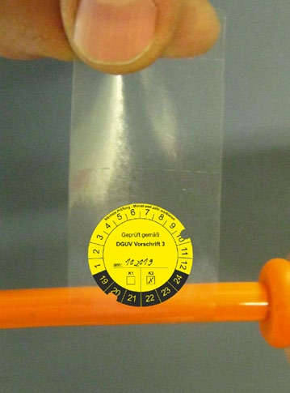
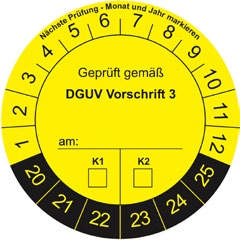

Die Prüfperson ist verantwortlich für die Bewertung der Prüfung. Diese Bewertung dient dem Unternehmer als Grundlage zur Präzisierung der Gefährdungsbeurteilung und trägt damit zur Anpassung der Prüffristen bei.
Die Dokumentation muss dem Unternehmer auch notwendige Hinweise zum Weiterbetrieb geben, z. B. Nachrüstung oder Mängelbeseitigung, Stilllegung. Die Verantwortung für den Weiterbetrieb trägt der Unternehmer (s. auch Kapitel 9).
| Hinweis |
| Das Ergebnis der Prüfung ist zu dokumentieren! |
Die Aufzeichnung von Messwerten und Messverfahren im Rahmen der Dokumentation der Prüfergebnisse ist sinnvoll. Durch ein längerfristiges Aufbewahren der Messwerte lassen sich Veränderungen des Zustandes der elektrischen Anlage bzw. des Betriebsmittels darstellen und Prüffristen bestätigen oder korrigieren.
Die Dokumentation sollte mindestens folgende Informationen beinhalten:
Übliche Formen der Dokumentation sind:
Beispiele für Prüfprotokolle siehe:
Um auch dem Benutzer die Mitwirkung bei der Überwachung der Prüffristen zu ermöglichen, sollten Betriebsmittel und gegebenenfalls auch Teile der elektrischen Anlage durch Aufbringen einer Plakette mit dem nächsten Prüftermin gekennzeichnet werden.
Das generelle Anbringen von Prüfplaketten wird in den Regelwerken nicht verlangt. Lediglich für Betriebsmittel, die an wechselnden Orten betrieben werden, wie ortsveränderliche Betriebsmittel oder Betriebsmittel nichtstationärer elektrischer Anlagen, fordert die BetrSichV das Vorhalten eines Nachweises über die erfolgte Prüfung am Einsatzort (vergleiche § 14 Abs. 7 BetrSichV). Die TRBS 1201 sieht dazu auch die Möglichkeit des Anbringens einer Prüfplakette mit den relevanten Informationen vor.
Gleichermaßen kann bei ortsveränderlichen Betriebsmitteln die Kategoriekennzeichnung K1/K2 nach DGUV Information 203-005 "Auswahl und Betrieb ortsveränderlicher elektrischer Betriebsmittel nach Einsatzbedingungen" erfolgen.
| Hinweis |
| Durch ein längerfristiges Aufbewahren der Dokumentation aussagefähiger Prüfergebnisse lassen sich Veränderungen des Zustandes der elektrischen Anlagen und Betriebsmittel darstellen und Prüffristen bestätigen oder korrigieren! |
 |
 |
| Abb. 7 Beispiel für eine Prüfbanderole zur Befestigung an der Leitung | Abb. 8 Beispiel für eine Prüfplakette |